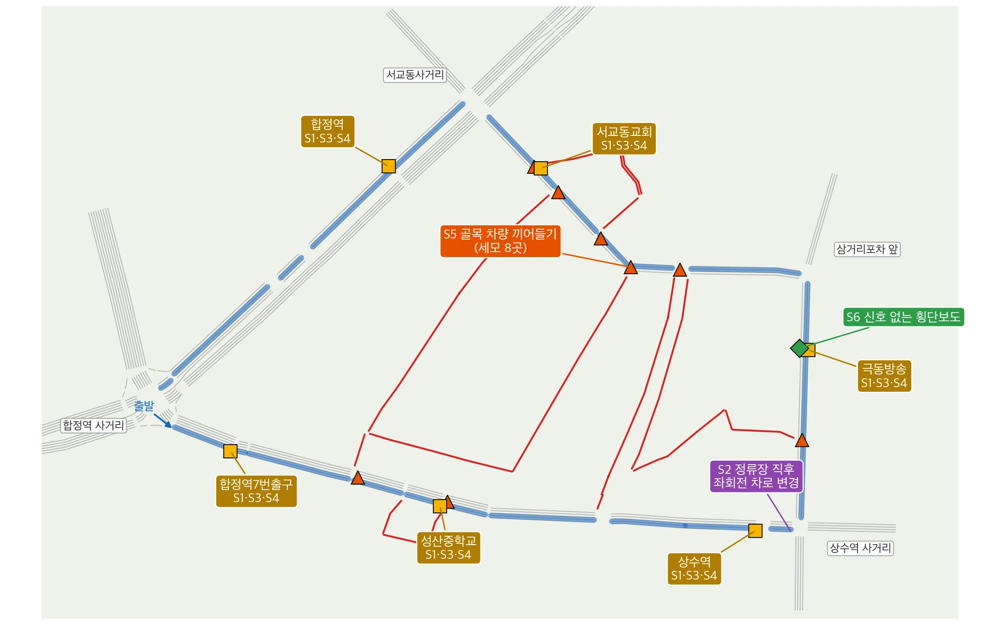

도로 선정과 문제
연구 버스는 합정역에서 출발해 독막로를 따라 상수역까지 가고, 와우산로와 잔다리로를 지나 서교동사거리에서 양화로로 좌회전해 합정역으로 돌아온다. 이 도로를 고른 이유는 구조에 있다. 정류장은 모두 가로변 차로에 있고, 좌회전은 가장 왼쪽 차로에서만 한다. 둘이 번갈아 나오므로 버스는 가로변과 왼쪽 끝 사이를 계속 오가야 한다.
버스는 0.5초마다 가감속과 차로 변경을 정한다. 옆 차로의 틈을 보고 끼어들지, 속도를 줄여 기다릴지가 문제의 핵심이다.
| 번호 | 상황 | 버스가 판단할 것 |
|---|---|---|
| S1 | 정류장 출발 후 재합류 | 정차를 마친 뒤 출발 시점 |
| S2 | 좌회전 전 왼쪽 차로 변경 | 옮길 차로의 틈, 기다릴 때의 속도 |
| S3 | 정류장 접근 오른쪽 차로 변경 | 감속 시점과 차로 변경 순서 |
| S4 | 정류장 앞 택시 | 택시 뒤에서 기다릴지 |
| S5 | 골목 차 끼어들기 | 감속과 양보 |
| S6 | 신호 없는 횡단보도 | 보행자 앞에서 설지 |
도로와 SUMO 구현
원본 도로망은 OpenStreetMap으로 만들었다. 빌드 스크립트가 실제 지도와 대조해 고친 내용을 순서대로 적용해 실행 도로망을 만든다. 손으로 고친 파일이 없어 같은 입력이면 같은 도로망이 나온다.

제한속도는 안전속도 5030 기준이다. 간선은 시속 50km, 이면도로는 시속 30km다. 버스는 길이 12m, 폭 2.5m, 가속 1.0m/s², 감속 2.0m/s²이고 정류장마다 8초 선다.
좌회전은 가장 왼쪽 차로에서만
노선의 좌회전 네 곳(상수역 사거리, 삼거리포차 앞, 서교동사거리, 합정역 사거리)은 가장 왼쪽 차로에서만 할 수 있다. 버스는 정류장을 떠난 뒤 왼쪽 끝까지 옮겨야 하고, 합정역 사거리 앞에서는 167m 안에 세 차로를 건넌다.

실제 골목 여덟 묶음
골목이 없으면 버스 길로 나오는 골목 차가 거의 없다. 버스 경로 안쪽의 실제 골목 여덟 묶음을 살렸다. 아래 수치는 골목을 넣을 때 규칙 버스로 160번 돌아 잰 값이다.

잔다리로6길
끼어들기 28번시간당 45대

잔다리로3길
끼어들기 21번시간당 19대

독막로6길 고리
끼어들기 14번시간당 47대

와우산로11길
끼어들기 3번시간당 50대
고칠 때마다 30분 시험 300번에서 충돌이나 급정지가 난 시험 수를 셌다. 자세한 내용은 골목 보고서에 있다.
교통 구성
일반 차는 실행 전에 seed로 정해지는 route/flow 파일대로 나온다. 버스 위치를 보고 차를 넣지 않는다. 같은 seed에서 버스를 넣은 실행과 뺀 실행을 견주면 배경 차 467대의 출발 시각과 경로가 모두 같다. 주행 중 시뮬레이터 명령을 받는 것은 버스 하나뿐이다.
| 교통 | 시간당 차량 | 버스 150m 안 차 | 구성 |
|---|---|---|---|
| 한산 | 663대 | 4.9대 | 기준 수요의 0.5배 |
| 보통 | 1,326대 | 10.5대 | 기준 수요 |
| 혼잡 | 1,658대 | 12.4대 | 1.25배 |
| 매우 혼잡 | 1,989대 | 16.3대 | 1.5배 |
| 복합 | 1,989대 | 18.8대 | 1.5배와 같은 총수요에 정류장 택시, 골목 차, 보행자 1.5배 |
차 수만 늘리면 신호 앞 대기 줄만 길어지고 구간 가운데는 비어 있다. 그래서 복합 교통은 총수요를 그대로 두고 그 일부를 구간 가운데에서 버스와 얽히는 차로 바꿨다.
- 정류장 택시. 버스가 서는 정류장 4곳의 정류장 차로에 택시가 15~30초씩 선다. 정류장 차로가 택시로 차 있는 시간은 25%다.
- 골목 차. 수요의 10%가 골목 두 곳에서 버스 노선으로 합류한다.
- 보행자. 지도의 보행자 흐름 전부를 1.5배로 늘렸다.
- 갑자기 나타나는 차 없음. 골목과 택시 출발 도로는 차가 처음 나타나는 자리가 버스 노선에서 50m 넘게 떨어진 곳만 쓴다. 순간이동은 꺼 두었다.
차량 추종 모델은 Krauss 35%, IDM 30%, EIDM 20%, ACC 15%를 섞었다. 차로 변경은 차로 안 옆 위치까지 계산하는 SL2015 모델이라, 끼어들기가 여러 스텝에 걸쳐 일어난다.
차량 interaction
평가 13,000바퀴에서 버스가 다른 차·보행자와 얽힌 장면을 바퀴당 횟수로 셌다. 버스가 보는 50m 범위 안만 센다.
| 장면 (바퀴당) | 한산 | 보통 | 혼잡 | 매우 혼잡 | 복합 |
|---|---|---|---|---|---|
| 정류장 정차 중 뒤 50m 안에 차 (S1) | 0.27 | 0.53 | 0.67 | 0.79 | 1.56 |
| 왼쪽 변경 때 옮길 차로 뒤 30m 안에 차 (S2) | 0.33 | 0.88 | 1.22 | 1.49 | 2.11 |
| 오른쪽 변경 때 옮길 차로 뒤 30m 안에 차 (S3) | 0.61 | 0.84 | 0.91 | 0.95 | 0.93 |
| 앞으로 끼어든 차 (S5) | 0.33 | 0.67 | 0.86 | 0.99 | 1.50 |
| 보행자가 건너던 횡단보도 접근 (S6) | 2.02 | 1.99 | 1.93 | 1.96 | 2.33 |

AV 학습 설계
| 항목 | 내용 |
|---|---|
| Observation | 46차원 부분 관측(50m 범위). 버스 속도와 가속도, 다섯 차로의 앞뒤 차, 차로 밀도, 차로별 경로 연결 거리, 신호, 정류장, 횡단보도, 제한속도. 신경망은 그중 31개를 쓴다. |
| Action | [가감속, 차로 변경]. 가감속은 +1.0 ~ -2.0m/s², 차로 변경은 {-1, 0, +1}. 0.5초마다 한 번 판단한다. |
| Reward | 속도 0.1 × v/vmax, 정류장 정차 +1, 정류장 지나침 -3, 충돌 -5, 적색 통과 -5, 도착 +2, 멈춰 섬 -2, 승차감 한계 넘음 -0.02. |
| 종료 | 충돌, 적색 통과, 도착, 멈춰 섬(200초 동안 5m 못 감), 1,400 step(700초). |
| 신경망 | MLP, 은닉층 256 × 2, 가중치 81,514개. 출력은 가속도 11칸과 차로 3가지의 점수다. |
차로를 알려 주는 지시는 없다. 버스는 차로마다 내 노선으로 이어지는 거리만 보고 어느 차로로 갈지 스스로 정한다. 가속도를 값 하나로 맞히게 하면 "선다"와 "간다"의 중간값을 내서, 11칸 중 하나를 고르게 했다.
DAgger와 커리큘럼
신경망이 직접 몰고, 그 상태마다 규칙 운전사의 정답을 붙여 합본으로 다시 학습한다. 규칙 운전사는 학습 때 정답을 붙이는 데만 쓰고 주행 때는 쓰지 않는다. 쉬운 교통에서 붐비는 교통으로 넓혔다.
| 단계 | 교통 | 내용 |
|---|---|---|
| 시범 | 한산, 보통, 혼잡 | 규칙 운전사가 300바퀴를 몰고 그 기록으로 처음 모방학습 |
| DAgger 1~12회 | 한산, 보통, 혼잡 | 회마다 교통별 25바퀴를 신경망이 직접 몬다 |
| DAgger 13~16회 | + 매우 혼잡 | 끼어들기와 대기 줄 상황을 늘린다 |
| DAgger 17~21회 | + 택시·골목 차·보행자 | 정류장 앞 택시와 골목 차를 배운다 |
| DAgger 22~24회 | 다섯 교통 전부 | 최종 합본 271만 건 |
최종 모델은 마지막 네 단계를 같은 seed 480바퀴에서 견줘 골랐다. 기준은 평가 전에 정했다. 안전 사건(차 충돌, 보행자 충돌, 적색 통과)이 가장 적은 것이다. 네 단계의 안전 사건은 8, 26, 13, 6번이었고 24회 모델을 골랐다.
평가 결과
다섯 교통에서 2,600바퀴씩, 모두 학습에 쓰지 않은 seed로 평가했다. 주행 중 규칙 보조는 없고 버스의 SUMO 안전장치(speedMode 0, laneChangeMode 0)는 끈다. 바퀴가 끝난 원인은 원본 기록에서 직접 셌다.
| 교통 | 바퀴 | 완주 | 차 충돌 | 보행자 충돌 | 적색 통과 | 멈춰 섬 | 시간 초과 |
|---|---|---|---|---|---|---|---|
| 한산 | 2,600 | 2,594 | 2 | 0 | 1 | 3 | 0 |
| 보통 | 2,600 | 2,544 | 14 | 0 | 1 | 38 | 3 |
| 혼잡 | 2,600 | 2,519 | 10 | 1 | 1 | 59 | 10 |
| 매우 혼잡 | 2,600 | 2,471 | 16 | 1 | 4 | 87 | 21 |
| 복합 | 2,600 | 2,297 | 34 | 8 | 18 | 170 | 73 |
| 합계 | 13,000 | 12,425 (95.6%) | 76 | 10 | 25 | 357 | 107 |
- 충돌률 0.66%. 차 76번과 보행자 10번을 합쳐 86번이다. 가장 어려운 복합 교통만 보면 1.6%다.
- 완주율 95.6%. 복합 교통을 뺀 네 교통은 97.4%, 복합 교통은 88.3%다.
- 순간이동 0건. 순간이동을 꺼 두어 막힌 경우는 "멈춰 섬"으로 드러난다.
- 보수적으로 세도 5% 아래. 차 상자가 버스 상자와 겹친 바퀴 391개를 모두 충돌로 쳐도 3.7%다.
실패한 곳
| 실패 | 횟수 | 가장 많은 곳 |
|---|---|---|
| 멈춰 섬 | 357 | 서교동사거리 앞 305번. 정류장을 떠나 좌회전 줄에 끼어들지 못한다 |
| 시간 초과 | 107 | 합정역 사거리 앞뒤 대기 줄 71번 |
| 차 충돌 | 76 | 합정역 사거리 갈림 지점 31번, 서교동사거리 안 18번 |
| 적색 통과 | 25 | 독막로 11번, 서교동사거리 앞 8번 |
| 보행자 충돌 | 10 | 와우산로 신호 없는 횡단보도 9번 |
주행 영상
잘한 장면과 실패한 장면을 함께 싣는다. 모두 평가 기록을 그대로 다시 그린 것이다.
실패 장면
실패는 신호가 바뀌는 순간과 대기 줄 끝에 몰려 있다.
데이터셋
학습한 신경망이 직접 몬 13,000바퀴를 판단 한 번(0.5초)마다 한 건으로 기록했다. 탐색 잡음은 넣지 않았다. 버스가 실패한 바퀴와 시뮬레이션 이상이 있는 바퀴 1,290개를 바퀴 단위로 빼고 공개한다.
- 파일. 묶음마다 JSONL(전체 항목), NPZ(학습용 배열), metadata.json(설정, 컬럼 설명, seed, 걸러 낸 내용)이 있다.
- 더한 항목. 수업 기본 항목에 감지한 보행자, 적색 통과, 종료 원인, 정류장 정차, 승차감(가속도와 jerk), 신호와 경로 정보를 더했다.
- 검증. 65묶음 모두 NPZ 행 수가 metadata의 건수와 같다. 올린 뒤 내려받은 파일의 해시가 원본과 같다.
- 모델. 데이터를 모은 신경망(
model/model.pt)도 함께 올렸다.
문제와 해결
| 영역 | 문제 | 해결 | 결과 |
|---|---|---|---|
| 도로 | 붙어 있는 교차로에서 급정지와 충돌 | 교차로를 합치고 차로를 한 차로씩 이음 | 급정지 40 → 0번 |
| 교통 | 대기 줄의 선 차가 돌아 뒤차와 겹침 | 선 차의 옆 이동을 끔 | 26 → 0대 |
| 교통 | 구간 가운데에 차가 없음 | 정류장 택시와 골목 차를 수요로 넣음 | 앞차 있는 시간 12.7% |
| 학습 | 모방학습만으로는 30바퀴 중 26바퀴 완주 | DAgger로 벗어난 상태의 정답을 더함 | 10회 뒤 60바퀴 모두 완주 |
| 학습 | 황색에서 어정쩡하게 줄이다 넘음 | 가속도를 11칸 중 고르게 함 | 적색 통과 0.19% |
| 데이터 | 실패·이상 바퀴가 섞임 | 바퀴 단위 걸러내기 | 1,290바퀴 제외 |
결론과 한계
- 왜 이 도로인가. 가로변 정류장과 가장 왼쪽 차로 좌회전이 번갈아 나와 차로 변경이 한 바퀴에 8~9번 반복된다.
- 어떤 interaction인가. 정류장 출발과 접근, 좌회전 전 끼어들기, 정류장 앞 택시, 골목 차, 신호 없는 횡단보도다.
- AV가 해결했는가. 규칙 보조 없이 신경망만으로 13,000바퀴 중 95.6%를 완주했고 충돌은 0.66%다.
- 데이터에 기록했는가. 1,086만 건을 정류장, 보행자, 신호, 승차감 항목과 함께 공개했다.
한계
- 서교동사거리 앞 멈춰 섬이 실패의 절반을 넘는다(575바퀴 중 305바퀴). 규칙 운전사도 같은 곳에서 멈춰 서므로, 따라 배우는 방식으로는 줄지 않았다.
- 차로 변경의 88%는 구간 가운데에서 일어나고, 그곳의 차 수는 신호 앞의 절반이 안 된다.
- 규칙 운전사가 스스로 완주하지 못하는 교통(1.75배 이상)은 가르칠 수 없다.